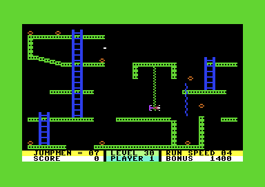

02 · Groups and alternatives
The route through the files
Jungle chooses the next Mystery Maze file from the reserve counter: below 3 selects 2A, 3–4 selects 2B, and at least 5 selects 2C. With the current life included, those are 1–3, 4–5 and 6 or more lives. All three variants display level 25 and continue to 26. The selector was checked for every reserve byte. Controlled Jungle completions with 2, 4 and 5 reserves loaded the exact 2A, 2B and 2C files. Jungle's selection routine.
Mystery Maze reveal boundaries
All three layouts reveal four columns around the player: two rows near the top, three elsewhere. Checking all 393,216 coordinate cases found no display overrun. A carry inherited from the X calculation makes the right half of each eight-pixel column cross the next reveal row one scanline earlier. Eighteen controlled native calls confirmed selected edge cases. Revealed cells stay visible; collision continues to read the hidden bitmap.
Grand Puzzle III has a second stage
The atlas shows its initial drawing. Its private routine can replace the scenery with stream $31AA, switch the bomb table to $3226 and change the bullet limit to 5. Four of that second table's eight records award 400 before the ordinary 100 points. The second-stage drawing streams are included in the original-code comparisons and annotated source, but the atlas does not simulate the stage transition. In a controlled native test, requesting transformation with four bombs remaining executed the full change. Holding left then caused an ordinary death, which completed the level with all four targets still outstanding. The same input in stage one led to a respawn. A legal collection-and-contact route to the transformation remains unverified. Transformation source.
